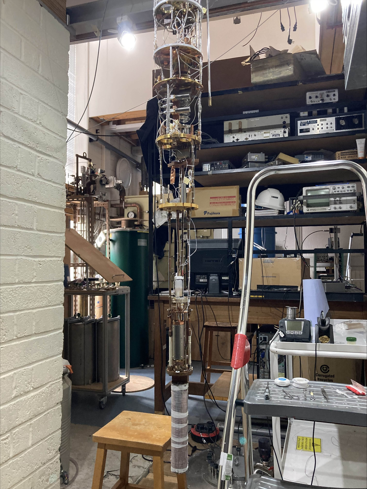
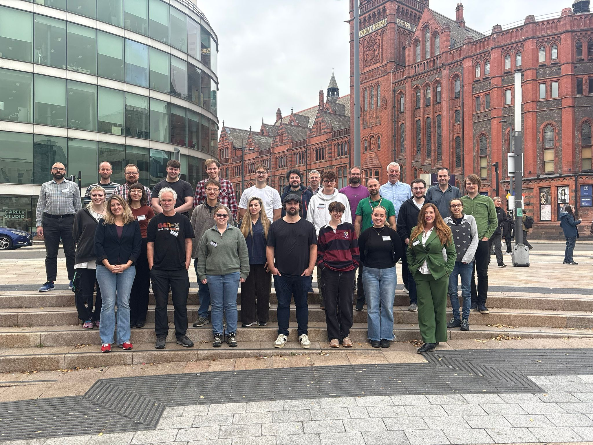

News
London Visit

Last week, the QuMAP group went to london to catch up on theoretical calculations of the response
of superfluids to particle collisions, particularly at low energies. We also saw the Nuclear Demagnetization
fridge ND3, and discussed in detail the intricate physicists around the Kapitza resistance. This phenomenon
describes the energy transfer between the He3 and the surrounding copper. This transfer becomes very
inefficient at low temperatures do the mismatch of so called "phonons" basically sound-waves in the media.
This thermal shielding makes certain dark matter searches that we plan very challenging, and we are actively
looking into experimentally solving those issues.
December 14, 2025
QuEST-DMC Workshop 2025

Wrapping up the 2025 QuEST-DMC workshop! The meeting brought together researchers
exploring how superfluid helium can reveal the tiniest traces of dark matter, and
how phase transitions in quantum fluids mirror those that shaped the early universe.
This event crossed beyond scientific interactions, bringing together amazing people
and amazing topics in an amazing place. We are looking forward to the next meeting.
October 17, 2025
Article Featured in Universe Today
 Check out this recent article titled
'Dark Matter Could Create Dwarfs at the Center of the Milky Way', featured in Universe Today.
Check out this recent article titled
'Dark Matter Could Create Dwarfs at the Center of the Milky Way', featured in Universe Today.
October 13, 2025